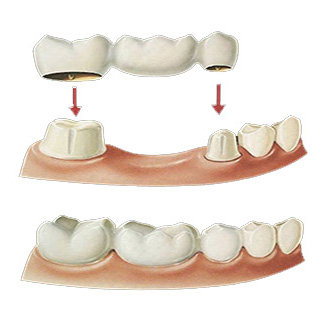
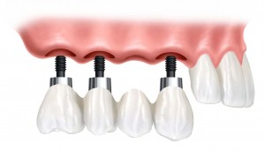
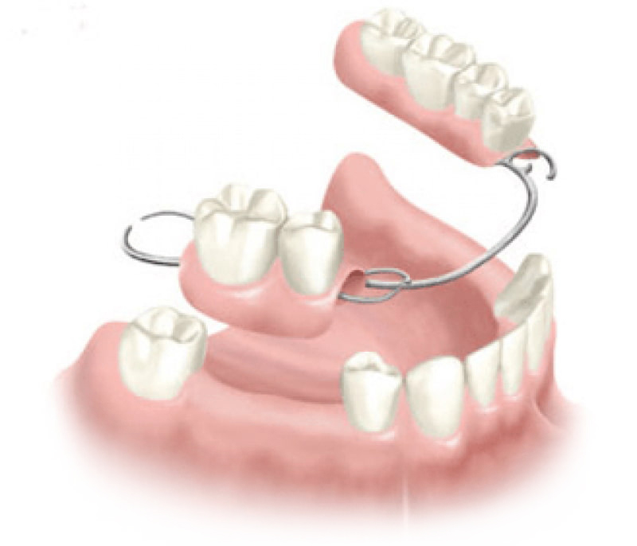
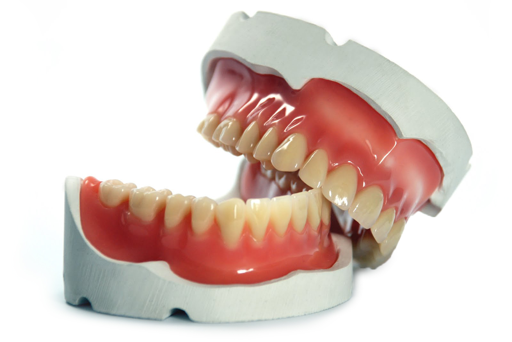

As próteses dentárias são estruturas que podem ser utilizadas com o objetivo de restaurar o sorriso por meio da substituição de um ou mais dentes que faltam na boca ou que estão desgastados. Assim, as próteses são indicadas com o objetivo de melhorar a mastigação e a fala da pessoa, que podem ser prejudicadas pela falta de dente. O tipo de prótese indicada vai depender da quantidade de dentes comprometidos ou em falta e da condição da gengiva.
Principais Tipos de Prótese
As próteses dentárias são indicadas pelo dentista de acordo com a quantidade de dentes comprometidos ou em falta, além da condição geral da boca do paciente. Assim, as próteses podem ser classificadas em parciais, quando apenas alguns dentes são substituídos na prótese, ou total, quando há necessidade de substituir todos os dentes, sendo esse último tipo de prótese mais conhecida como dentadura.
Além da classificação em parcial e total, as próteses também são classificadas em removíveis, quando a pessoa pode retirar a prótese para fazer a higienização, por exemplo, ou fixas, quando a prótese é implantada na mandíbula ou os dentes faltantes são parafusados. Assim, os principais tipos de próteses dentárias são:
Prótese sobre dente x implante
Prótese sobre dente é quando você tem a raiz do dente fixada no osso, podendo ou não ter a coroa. Quando não se tem mais a coroa dentária e você tem somente a raiz ou algum remanescente, você pode colocar uma prótese, que neste caso será uma prótese sobre dente, ou seja prótese fixa como é chamada. A prótese fixa pode ser unitária ou múltipla, contudo a prótese fixa múltipla vem sendo muito pouco utilizada devido a inúmeras vantagens que a prótese sobre implante nos oferece.
Quando se perde a raiz, independente do motivo, tem que ser colocado um implante dentário no lugar. O implante dentário é um parafuso que é fixado no osso, substituindo assim a raiz do dente. E a prótese sobre implante é a peça protética ou coroa de porcelana colocada parafusada ou cimentada neste implante, ou seja, o dente que enxergamos.
 Saiba mais sobre implantesEm casos de perdas parciais de um ou mais dentes onde ainda existam remanescentes dentários podem ser utilizadas próteses unitárias ou parciais fixas sobre implantes, substituindo com eficácia cada dente perdido e restabelecendo as funções mastigatória do paciente.
Prótese Parcial
As próteses parciais são aquelas indicadas pelo dentista com o objetivo de substituir a falta de algum dente, sendo normalmente removíveis. A prótese parcial removível ou móvel é constituída por uma estrutura metálica com o objetivo de reter os dentes saudáveis, havendo a substituição apenas daqueles que faltam, dando mais estabilidade na hora da mastigação e da fala. Normalmente esse tipo de prótese é indicada quando não é possível fazer um implante, principalmente quando a gengiva não está em condições adequadas. A desvantagem desse tipo de prótese é estética, pois a placa metálica é visível, podendo incomodar algumas pessoas.
Há também a prótese parcial removível provisória, que é mais indicada para tratamento provisórios, ou seja, quando há recomendação da realização da colocação de um implante, por exemplo, mas a saúde bucal e geral do paciente está prejudicada, não sendo recomendada a realização do procedimento naquele momento.
Prótese Total
A prótese total, popularmente conhecida como dentadura, é indicada quando a pessoa perde vários dentes, sendo a prótese feita de acordo com o formato, tamanho e cor dos dentes originais, evitando que o sorriso fique artificial.Esse tipo de prótese é, normalmente, removível e é recomendado com mais frequência para idosos, que tendem a perder os dentes ao longo do tempo, mas também para pessoas que perderam os dentes devido a doenças ou acidentes, por exemplo.O uso da dentadura é recomendado quando a fala e a mastigação são prejudicadas pela falta de dentes, mas também podem ser usadas para estética, pois a falta de dentes pode deixar o rosto com aspecto flácido.